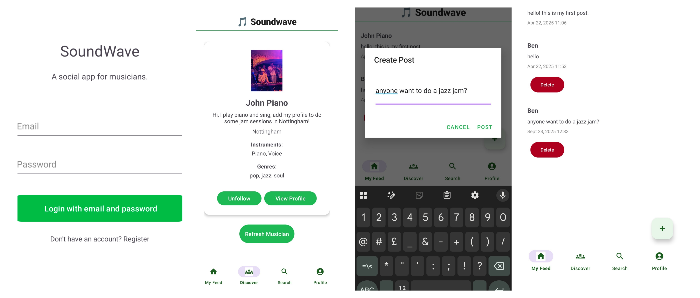

SoundWave
A mobile social platform for musicians to connect, collaborate, and discover. Designed and built end-to-end using Android Studio and Firebase, with UI prototyped in Figma.
Tech: Android, Java, Firebase, Figma
Software Developer | Professional Trombonist
My name is Ben, I'm a software developer and professional trombonist. I build reliable, user-focused software and perform professionally across a range of musical settings. Both disciplines shape how I work: precision, creativity, and clear communication.
I enjoy solving real-world problems, particularly where technology and creativity overlap. Whether I’m building an AI-powered chatbot or a platform for musicians to collaborate, my focus is on creating software that feels useful, intuitive, and human.
I design and build practical software with a focus on clean structure, intuitive user experience, and real-world use.
A mobile social platform for musicians to connect, collaborate, and discover. Designed and built end-to-end using Android Studio and Firebase, with UI prototyped in Figma.
Tech: Android, Java, Firebase, Figma
A mobile application for landlords to manage properties, tenants, and maintenance requests, with an emphasis on simple workflows and offline-first usability.
Tech: Android, Java, Firebase
A distributed booking system for student accommodation, built with a Java client and RESTful backend hosted on Tomcat.
Tech: Java, REST APIs, Tomcat
An AI-powered chatbot that answers questions about brass instruments using natural language, voice input, and image recognition.
Tech: Python, NLP, AI models
A collaborative mobile app built in an Agile team environment, focused on user-centred design and rapid iteration.
Tech: Android, Java, Agile, GitHub
I’m a professional trombonist performing across jazz, big band, ska, and brass ensemble settings.
I currently perform with The Hoplites, a Nottingham-based ska band, alongside regular work in jazz and ensemble settings.
This section will feature performance videos, recordings, and booking information.
For software work, collaborations, or music enquiries, feel free to get in touch.
Email: bensjoshi@gmail.com
LinkedIn: linkedin.com/in/ben-joshi
Nottingham, UK